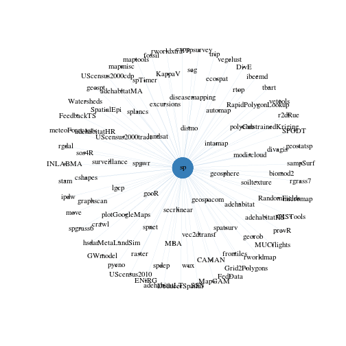
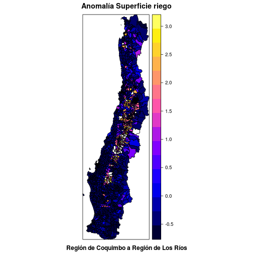
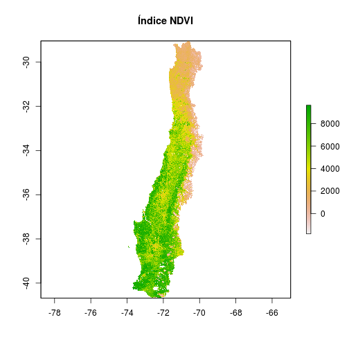
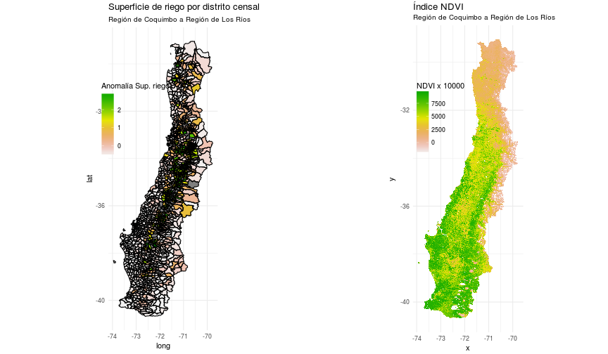

Francisco Zambrano
Universidad de Concepción
Espacial: Datos que tienen un lugar en el espacio (ej. posición, x,y,z)
Geo-espacial: Datos que tiene una posición geográfica (ej. latitud, longitud)
Vectorial: Formas simples de representación por geometrías. Puntos, lineas, poligonos.
Raster: Representación con datos grillados.
spR no tenía soporte para manejo y análisis de información geo-espacial.spPebesma, E.J., R.S. Bivand, 2005. Classes and methods for spatial data in R. R News 5 (2)https://cran.r-project.org/doc/Rnews/Rnews_2005-2.pdf
Principales paquetes
maptools: manejo de datos vectoriales ESRI shapefiles (.shp).
Roger Bivand and Nicholas Lewin-Koh (2017). maptools: Tools for Reading and Handling Spatial Objects. R package version 0.8-41
raster: series temporales de datos grillados geo-espaciales.
Robert J. Hijmans (2016). raster: Geographic Data Analysis and Modeling. R package version 2.5-8
Dependencias de sp

## IGRAPH DN-- 94 93 --
## + attr: name (v/c), relation (e/c), color (e/c)
## + edges (vertex names):
## [1] CAMAN ->sp DeducerSpatial ->sp DivE ->sp
## [4] ENiRG ->sp FedData ->sp FeedbackTS ->sp
## [7] GISTools ->sp GWmodel ->sp Grid2Polygons ->sp
## [10] INLABMA ->sp KappaV ->sp MBA ->sp
## [13] MUCflights ->sp MapGAM ->sp MetaLandSim ->sp
## [16] RandomFields ->sp RapidPolygonLookup->sp SPODT ->sp
## [19] SSN ->sp SpatialEpi ->sp UScensus2000cdp ->sp
## [22] UScensus2000tract ->sp UScensus2010 ->sp Watersheds ->sp
## + ... omitted several edges
Principales paquetes
gstat: análisis geo-estadístico espacio-temporal.maptools y rasterlibrary(maptools)
shp <- readShapePoly('spatial_data/vectorial/riegominis_r4_r14.shp',proj4string=CRS("+proj=longlat +datum=WGS84"))
shp@data$sup_riego <- scale(shp@data$sup_riego)
shp@data$sup_riego[shp@data$sup_riego>3] <- NA
library(raster)
ndvi <- raster('spatial_data/raster/NDVI.tif')
maptools y rastersp::spplot(shp,zcol='sup_riego')

raster::plot(ndvi)

ggplot2library(ggplot2)
#Superficie de riego (Vectorial)
shp.f <- ggplot2::fortify(shp,region='coddis')
p1 <- ggplot() +
geom_map(data=shp@data,aes(map_id = coddis,fill=as.numeric(sup_riego)),colour=NA,map = shp.f,size=0.05) +
geom_polygon(data=shp.f,aes(x=long,y=lat,group=group),color='black',fill=NA)+
scale_fill_gradientn('Anomalía Sup. riego',colours = rev(terrain.colors(10)))+
labs(title='Superficie de riego por distrito censal',
subtitle='Región de Coquimbo a Región de Los Ríos')+
coord_equal()+
theme_minimal()+
theme(legend.position=c(.25,.7))
ggplot2# NDVI (raster)
ndvi.p <- data.frame(raster::rasterToPoints(ndvi))
p2 <- ggplot(NULL, aes(x, y)) +
geom_raster(data = ndvi.p, aes(fill = NDVI)) +
scale_fill_gradientn('NDVI x 10000',colours = rev(terrain.colors(10)))+
labs(title='Índice NDVI',
subtitle='Región de Coquimbo a Región de Los Ríos')+
coord_equal()+
theme_minimal()+
theme(legend.position=c(.25,.7))
ggplot2library(gridExtra)
gridExtra::grid.arrange(p1,p2,nrow=1)

leaflet: crea mapas dinámicos con la libreria leaflet de JavaScript
Joe Cheng, Bhaskar Karambelkar and Yihui Xie (2017). leaflet: Create Interactive Web Maps with the JavaScript 'Leaflet' Library. R package version 1.1.0.
mapview: métodos para visualizar objetos geo-espaciales en forma dinámica.
Tim Appelhans, Florian Detsch, Christoph Reudenbach and Stefan Woellauer (2017). mapview: Interactive Viewing of Spatial Objects in R. R package version 2.1.4.
mapedit: edición interactiva de objetos geo-espaciales.
Tim Appelhans and Kenton Russell (2017). mapedit: Interactive Editing of Spatial Data in R. R package version 0.3.6.
mapview
Integración con otros paquetes
Paquetes geoespaciales + tidyverse + knitr + ...
raster)vectorial)INE, 2007) (vectorial)sf: simple features, sucesor del paquete sp.
Edzer Pebesma (2017). sf: Simple Features for R. R package version 0.5-4.
stars: spatiotemporal tidy arrays for R. Sucesor de raster. En desarrollo.